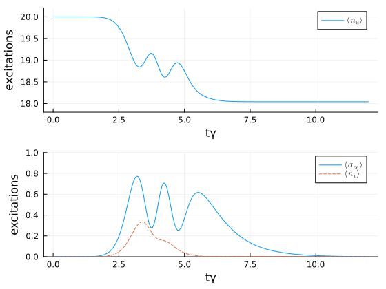

Interaction Picture Scattering with a Quantum Pulse
In this example, we study the scattering of a Fock state $| n = 20 \rangle$ on a two-level system, using the interaction picture introduced in Christiansen et al., Phys. Rev. A 107, 013706 (2023). We start by loading the packages and specifying the model.
using QuantumInputOutputusing QuantumOpticsusing QuantumOpticsBase: daggerusing SecondQuantizedAlgebrausing Symbolics: Symbolicsusing SymbolicUtilsusing Plotsusing LaTeXStrings# symbolic Hilbert spacehu = FockSpace(:u)hs = NLevelSpace(:s, 2)hv = FockSpace(:v)h = hu ⊗ hs ⊗ hv# symbolic operatorsau_sym = Destroy(h, :a_u, 1)av_sym = Destroy(h, :a_v, 3)σ12_sym = Transition(h, :σ, 1, 2, 2)# symbolic parameters@variables gu::Number γ::Real gv::Number# cascade the SLH elementsG_u = SLH(1, gu' * au_sym, 0)G_s = SLH(1, sqrt(γ) * σ12_sym, 0)G_v = SLH(1, gv' * av_sym, 0)G_cas = ▷(G_u, G_s, G_v)H = hamiltonian(G_cas)(-0.5conj(gu)*sqrt(γ))im * a_u * σ₂₁ + (-0.5conj(gu)*gv)im * a_u * a_v' + (0.5gu*sqrt(γ))im * a_u' * σ₁₂ + (0.5conj(gv)*gu)im * a_u' * a_v + (-0.5gv*sqrt(γ))im * σ₁₂ * a_v' + (0.5conj(gv)*sqrt(γ))im * σ₂₁ * a_vL = jump_operator(G_cas)[1]conj(gu) * a_u + sqrt(γ) * σ₁₂ + conj(gv) * a_vUsually we deal with the above derived Hamiltonian and Lindblad. In this example, however, we transform the system into the interaction picture of the virtual cavity-cavity interaction Hamiltonian $H_{uv}$.
H_uv = hamiltonian(▷(G_u, G_v))(-0.5conj(gu)*gv)im * a_u * a_v' + (0.5conj(gv)*gu)im * a_u' * a_vTo do so, we first subtract $H_{uv}$ from $H$ and then replace the virtual cavity operators $a_v$ and $a_u$ as described in the Theory section.
H_int_sym_ = simplify(H - H_uv)# symbolic coefficient matrix $M(t)$M(i, j) = Symbolics.variable(Symbol("M_{$(i)$(j)}"); T = Complex{Real})a0_ls = [au_sym, av_sym]la = length(a0_ls)a_int_ls = [sum(M(i, j)*a0_ls[j] for j = 1:la) for i = 1:la]# substitute interaction picture operatorsint_dict = Dict([a0_ls; adjoint.(a0_ls)] .=> [a_int_ls; adjoint.(a_int_ls)])H_int_sym = simplify(substitute(H_int_sym_, int_dict))((0.5conj(gu)*imag(var"M_{11}")*sqrt(γ) - 0.5conj(gv)*imag(var"M_{21}")*sqrt(γ)) + (0.5conj(gv)*real(var"M_{21}")*sqrt(γ) - 0.5conj(gu)*real(var"M_{11}")*sqrt(γ))im) * a_u * σ₂₁ + ((0.5gu*imag(var"M_{11}")*sqrt(γ) - 0.5gv*imag(var"M_{21}")*sqrt(γ)) + (0.5gu*real(var"M_{11}")*sqrt(γ) - 0.5gv*real(var"M_{21}")*sqrt(γ))im) * a_u' * σ₁₂ + ((0.5gu*imag(var"M_{12}")*sqrt(γ) - 0.5gv*imag(var"M_{22}")*sqrt(γ)) + (0.5gu*real(var"M_{12}")*sqrt(γ) - 0.5gv*real(var"M_{22}")*sqrt(γ))im) * σ₁₂ * a_v' + ((-0.5conj(gv)*imag(var"M_{22}")*sqrt(γ) + 0.5conj(gu)*imag(var"M_{12}")*sqrt(γ)) + (0.5conj(gv)*real(var"M_{22}")*sqrt(γ) - 0.5conj(gu)*real(var"M_{12}")*sqrt(γ))im) * σ₂₁ * a_vL_int_sym = simplify(substitute(L, int_dict))((conj(gu)*real(var"M_{11}") + conj(gv)*real(var"M_{21}")) + (conj(gu)*imag(var"M_{11}") + conj(gv)*imag(var"M_{21}"))im) * a_u + sqrt(γ) * σ₁₂ + ((conj(gu)*real(var"M_{12}") + conj(gv)*real(var"M_{22}")) + (conj(gu)*imag(var"M_{12}") + conj(gv)*imag(var"M_{22}"))im) * a_vThe above Hamiltonian and Lindblad operator are the ones in the interaction picture of the virtual cavity interaction. We define the numerical parameters of the system, calculate the solution for the coefficient matrix $M(t)$ and solve the time evolution of the system.
# numerical parametersγ_ = 1.0n_photons = 20τ = 1 / γ_t_p = 4 / γ_u(t) = 1 / (sqrt(τ) * π^(1/4)) * exp(-0.5 * ((t - t_p) / τ)^2)T_end = 12.0T = [0:0.005:1;] * T_end# virtual-cavity couplings for input/output modesgu_t = coupling_input(u, T)gv_t = coupling_output(u, T) # identical output mode v(t) = u(t)# interaction-picture coefficient matrix M(t) for u ↔ vA_uv = coupling_matrix((gu_t, gv_t))M_t = solve_mode_evolution(A_uv, T)# constant and time-dependent parametersdict_p = Dict(γ => γ_)M_ls = [M(i, j) for i = 1:la for j = 1:la]M_t_ls = [t -> M_t(t)[i, j] for i = 1:la for j = 1:la]p_t_sym = [gu, gv, M_ls...]p_t_num = [gu_t, gv_t, M_t_ls...]dict_p_t = Dict(p_t_sym .=> p_t_num)# numerical basisbu = FockBasis(n_photons, n_photons-5)ba = NLevelBasis(2)bv = FockBasis(5)b = bu ⊗ ba ⊗ bvH_int_QO = to_numeric(H_int_sym, b; parameter = dict_p, time_parameter = dict_p_t)L_QO = to_numeric(L_int_sym, b; parameter = dict_p, time_parameter = dict_p_t)function input_output(t, ρ) Ht = H_int_QO(t) J = [L_QO(t)] return Ht, J, dagger.(J)end# time evolutionψ0 = fockstate(bu, n_photons) ⊗ nlevelstate(ba, 1) ⊗ fockstate(bv, 0)t, ρt = timeevolution.master_dynamic(T, ψ0, input_output)# numerical operatorsau = destroy(bu) ⊗ one(ba) ⊗ one(bv)av = one(bu) ⊗ one(ba) ⊗ destroy(bv)σee = one(bu) ⊗ transition(ba, 2, 2) ⊗ one(bv)n_u = real.(expect(au' * au, ρt))n_v = real.(expect(av' * av, ρt))P_e = real.(expect(σee, ρt))We can see that the mean photon number of the initial temporal mode $u$ is reduced by less than two photons. This allows us to significantly reduce the numerical Hilbert space dimension. If the interaction picture is not used, the input cavity $u$ completely empties and the output cavity almost completely fills again.
p1 = plot(T, n_u; label = L"\langle n_u \rangle")plot!( p1; xlabel = "tγ", ylabel = "excitations", ylims = (17.8, 20.2), grid = true, legend = :best,)p2 = plot(T, P_e; label = L"\langle \sigma_{ee} \rangle")plot!(p2, T, n_v; label = L"\langle n_v \rangle", ls = :dash)plot!( p2; xlabel = "tγ", ylabel = "excitations", ylims = (0, 1), grid = true, legend = :best,)plot(p1, p2; layout = (2, 1), size = (560, 420))
Package versions
These results were obtained using the following versions:
using InteractiveUtilsversioninfo()using PkgPkg.status( [ "QuantumInputOutput", "QuantumOptics", "SecondQuantizedAlgebra", "SymbolicUtils", "Plots", "LaTeXStrings", ], mode = PKGMODE_MANIFEST,)Julia Version 1.13.0
Commit d1c37793dd2 (2026-09-09 19:00 UTC)
Build Info:
Official https://julialang.org release
Platform Info:
OS: Linux (x86_64-linux-gnu)
CPU: 4 × AMD EPYC 7763 64-Core Processor
WORD_SIZE: 64
LLVM: libLLVM-20.1.8 (ORCJIT, znver3)
GC: Built with stock GC
Threads: 1 default, 0 interactive, 1 GC (on 4 virtual cores)
Environment:
JULIA_PKG_SERVER_REGISTRY_PREFERENCE = eager
JULIA_DEBUG = Documenter,Literate
JULIA_NUM_THREADS = 1
Status `~/work/QuantumInputOutput.jl/QuantumInputOutput.jl/docs/Manifest.toml`
[1520ce14] AbstractTrees v0.4.5
⌅ [7d9fca2a] Arpack v0.5.3
[4fba245c] ArrayInterface v7.30.1
⌅ [861a8166] Combinatorics v1.0.2
[187b0558] ConstructionBase v1.6.0
[d38c429a] Contour v0.6.3
⌅ [82cc6244] DataInterpolations v9.5.0
[864edb3b] DataStructures v0.19.6
[459566f4] DiffEqCallbacks v4.19.3
[77a26b50] DiffEqNoiseProcess v5.36.3
[ffbed154] DocStringExtensions v0.9.5
[7c1d4256] DynamicPolynomials v0.6.8
[4e289a0a] EnumX v1.0.7
[55351af7] ExproniconLite v0.10.14
[c87230d0] FFMPEG v0.4.5
[7a1cc6ca] FFTW v1.10.0
⌅ [53c48c17] FixedPointNumbers v0.8.6
[069b7b12] FunctionWrappers v1.1.3
[28b8d3ca] GR v0.73.27
[86223c79] Graphs v1.15.0
[42fd0dbc] IterativeSolvers v0.9.4
[1019f520] JLFzf v0.1.11
[682c06a0] JSON v1.8.0
[0b1a1467] KrylovKit v0.10.4
[b964fa9f] LaTeXStrings v1.4.1
[23fbe1c1] Latexify v0.16.12
[7a12625a] LinearMaps v3.11.4
[1914dd2f] MacroTools v0.5.16
[442fdcdd] Measures v0.3.3
⌅ [2e0e35c7] Moshi v0.3.9
[102ac46a] MultivariatePolynomials v0.5.19
[d8a4904e] MutableArithmetics v1.8.0
[77ba4419] NaNMath v1.1.4
[e7bfaba1] NumericalIntegration v0.3.4
⌅ [bac558e1] OrderedCollections v1.8.2
[1dea7af3] OrdinaryDiffEq v7.8.1
[1344f307] OrdinaryDiffEqLowOrderRK v2.2.5
[ccf2f8ad] PlotThemes v3.3.0
[995b91a9] PlotUtils v1.4.4
[91a5bcdd] Plots v1.41.7
[aea7be01] PrecompileTools v1.3.4
[18f9eda6] QuantumInputOutput v0.5.3 `~/work/QuantumInputOutput.jl/QuantumInputOutput.jl`
[5717a53b] QuantumInterface v0.4.4
[6e0679c1] QuantumOptics v1.2.9
[4f57444f] QuantumOpticsBase v0.5.15
[988b38a3] ReadOnlyArrays v0.2.0
[3cdcf5f2] RecipesBase v1.3.4
[01d81517] RecipesPipeline v0.6.12
[731186ca] RecursiveArrayTools v4.5.1
[189a3867] Reexport v1.2.2
[05181044] RelocatableFolders v1.0.1
[ae029012] Requires v1.3.1
[0bca4576] SciMLBase v3.53.2
[431bcebd] SciMLPublic v1.3.0
[6c6a2e73] Scratch v1.3.0
⌅ [f7aa4685] SecondQuantizedAlgebra v0.11.0
[efcf1570] Setfield v1.1.2
[992d4aef] Showoff v1.1.1
[276daf66] SpecialFunctions v2.9.0
[90137ffa] StaticArrays v1.9.20
[1e83bf80] StaticArraysCore v1.4.4
[10745b16] Statistics v1.11.5
[2913bbd2] StatsBase v0.34.13
[789caeaf] StochasticDiffEq v7.2.0
[2efcf032] SymbolicIndexingInterface v0.3.55
[d1185830] SymbolicUtils v4.46.4
[0c5d862f] Symbolics v7.39.2
[ed4db957] TaskLocalValues v0.1.3
[8ea1fca8] TermInterface v2.0.0
[1cfade01] UnicodeFun v0.4.1
[41fe7b60] Unzip v0.2.0
[d30d5f5c] WeakCacheSets v0.1.0
[2a0f44e3] Base64 v1.11.0
[ade2ca70] Dates v1.11.0
[f43a241f] Downloads v1.7.0
[37e2e46d] LinearAlgebra v1.13.0
[44cfe95a] Pkg v1.13.0
[de0858da] Printf v1.11.0
[3fa0cd96] REPL v1.11.0
[9a3f8284] Random v1.11.0
[2f01184e] SparseArrays v1.13.0
[fa267f1f] TOML v1.0.3
[cf7118a7] UUIDs v1.11.0
Info Packages marked with ⌅ have new versions available but compatibility constraints restrict them from upgrading. To see why use `status --outdated -m`
This page was generated using Literate.jl.